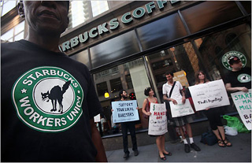

Submitted on Wed, 01/20/2010 - 4:07pm
 For Immediate Release:
For Immediate Release:
Brandworkers
January 20, 2010
Contact: press (at) brandworkers.org
Workers Reach Comprehensive Settlement with Prominent Seafood Company
Protracted Grassroots Campaign Saw Over 75 Leading Restaurants Stop Serving Wild Edibles Products
New York, NY- Lawyers filed with a federal bankruptcy judge a global settlement agreement totaling over $340,000 and containing strong workplace protections in a high-profile set of litigation brought by workers against one of New York's leading seafood companies, Wild Edibles, Inc.
The comprehensive settlement comes after a bitterly-contested campaign in which some two-dozen recent immigrant workers and their non-profit organization, Brandworkers, used grassroots actions, media advocacy, and community organizing in an effort to win legal accountability at Wild Edibles, which supplies seafood to some of NYC's most famed restaurants in addition to operating retail seafood outlets.
"We're on top of the world today because more than anything we showed that ordinary workers can get organized, take action together, and win," said Raymundo Lara Molina, a former Wild Edibles employee and member of Brandworkers.
Submitted on Tue, 01/19/2010 - 3:30pm
 For Immediate Release:
For Immediate Release:
Industrial Workers of the World (NYC)
January 18, 2010
Contact: Liberte Locke, 917-693-7742
Baristas Call on Starbucks to Honor Dr. King with March and Rally
IWW demands that coffee giant pay workers the same premium it pays on other federal holidays
New York, NY- The Industrial Workers of the World (IWW) branch here held a march and rally at Starbucks today to call on the corporation to honor Dr. Martin Luther King, Jr. on the federal holiday commemorating his birth. The Starbucks Workers Union of the IWW is demanding that Starbucks pay a holiday premium to baristas who work on MLK Day just as the Seattle-based chain does for five other federal holidays.
Submitted on Thu, 11/26/2009 - 12:29am
November 25, 8am: Workers along with members of the NYC-GMB march to Flaum, a kosher food distributor in Brooklyn, after a Labor Board ruling which ordered the boss to reinstate the workers with back pay. Instead, the boss wrongfully demanded that the workers reauthorize their immigration status and denied them their right to return to work.
The workers had been illegally fired for engaging in a work stoppage over the right to form a labor union and payment in accordance with the law.
Submitted on Wed, 08/26/2009 - 2:52am
Disclaimer - The opinions of the author do not necessarily match those of the IWW. The image pictured to the right appeared in the original article. This article and image is reposted in accordance to Fair Use guidelines.
By A. G. Sulzberger - New York Times, August 18, 2009.
Saying it spends nearly as much on health insurance for its workers as it does on coffee, Starbucks recently announced that it would increase the amount that eligible employees need to contribute to keep their health care coverage.
On Monday evening, newly unionized Starbucks baristas gathered at the company’s regional headquarters in Manhattan to protest the move, which they said would effectively double the cost of their health insurance.
The change would increase the cost of the most basic plan to $20 from $12.50 each paycheck and the annual sign-up cost to $200 from $100, according to Liberte Locke, a barista who has been active in unionization efforts with the Industrial Workers of the World.
“If they’re going to charge us this amount, our pay needs to increase,” she said. She added that a growing number of employees were ineligible for the health insurance because they worked fewer than 20 hours a week.
Submitted on Fri, 06/19/2009 - 11:42am
 By Diane Krauthamer
By Diane Krauthamer
On Wednesday, June 17, members of the New York City IWW protested against the callous layoffs at Havas’ Media Planning Group (MPG), a multimillion dollar media agency whose clients include some of the largest corporations in the world.
MPG recently cut 11 percent of its staff, primarily at its headquarters in New York. But the media giant did not anticipate that one of its former employees, Joseph Sanchez, would publicize their anti-worker practices.
“This extremely profitable corporation laid me off just to put extra money in their pockets,” said Sanchez, who worked in the client accounting department. “Instead of making a living wage, I’m surviving off unemployment benefits and food stamps.”